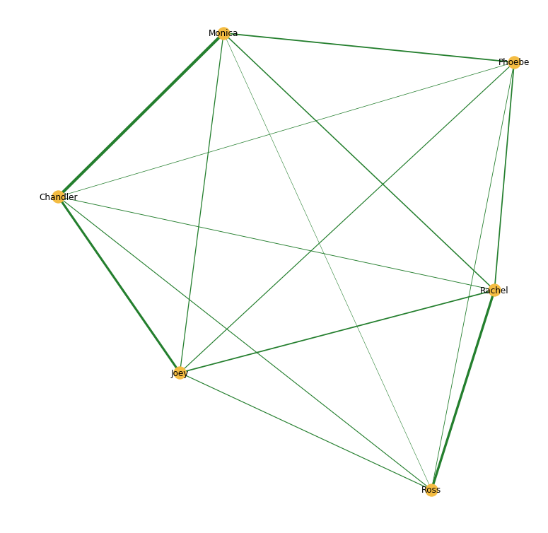

THE ONE WHERE WE ANALYSE 
The One With The Network Analysis The One With The Storylines The One With The Text Analysis The One With The Data Sets The One With The Notebook
So.. They stopped making more episodes of Friends back in 2004 and even though it's still possible to watch the series online and for each rewatch find new details on the show, it's like it's never enough. This project is an attempt to find out more details about the show, by looking at it from another angle. Using network analysis and text analysis I'm going to see if I can find out something new.
The project is based on data from three different sources; for the network analysis I used character descriptions from the Friends wiki fan page, there is an analysis based on the storylines for all episodes and also there is textual analysis based on the character descriptions as well as the transcripts for all episodes.
Want to know more? Click here for behind the scenes stuff
To see what the relations between the characters look like, I've made a directed network between them. The network is based on the character desciptions - for each description and edge is added between the person and all people that are referenced in that description. This results in the networks below.

The two versions of the network are based on the same data. There a some minor differences in the layout and then the network to the right only has labels on the main characters. This is just, so the structure of the network is more obvious than then one to the left. But I think it's quite funny to see the relations to the different characters that has appeared in the series over time.
As you might have noticed the node sizes are different. This is because they are proportional to their degree. Degree is the number of edges adjacent to a node. So it might not surprise you that the main characters have the biggest nodes.
The plot on the left shows the degree distribution for the network. As it displays a lot of the nodes have degrees of 50 or less, while 6 nodes have more than 150. Without investigating further it's pretty safe to say that these 6 nodes are our 6 main characters. When the distribution looks like this, it's a reflection of a network with hubs in it - meaning few nodes are "center" for other nodes.
So.. We've seen that our network contains hubs and can see from the network that our dear Friends are a popular group of people.. But who is actually the most popular one? There's a lot of different ways to investigate this. One of them is to go deeper into the analysis of the network and look at some centrality measures.

The in-degree centrality is a measure of how many people "know" a character. So in regards of the character pages, it's determined by the references to other characters on the character pages. As the plot above displays, Ross is the one that is referenced the most.

The out-degree is the opposite of the in-degree centrality. So in this measure we look at how many characters a certain charcterpage has references to. As you can see the one with the highest out-degree is Rachel and she's followed by Ross.

The betweenness centrality is based on shortest paths. A shortest path is the number of edges that needs to be traversed in order to get from node A to node B. For all nodes pairs in a network, there exists a shortest path. The betweeness centrality is then a measure of how many times a node is a part of a shortest path.

The main idea with eigenvector centrality is that nodes that are connected with "high scoring" nodes are more important than nodes that are node connected to such nodes. So a node with a high score is more powerful in a network, than a node with a lower score. You can see on the plot that the charcters have about the same score, but Monicas is just a bit higher.
We met the tanning salon guy in "The One With Ross' Tan". In the episode Ross goes to get a fake tan but misunderstands the directions of the tanning salon guy resulting in him getting sprayed two times on the front. When he comes back to get it fixed, it's goes wrong again..
Todd the Hombre man is a guy thaty Joey works with as a cologne spritzer. Joey is jealous of him, because he is doing a better job and also the girl that he likes is into Todd.
The thing that these two guys have in common is that their degree is 1. There's acutally quite a lot of people in the network with a degree of 1. This is a result of the fact that they only know one person in the network - and probably most of the characters with this property only appear in one episode. So the tanning salon guy only knows Ross and Todd, the hombre man only knows Joey.
| Community #1 |
|---|
| Carol Willick |
| Ben Geller |
| Charlie Wheeler |
| Paul Stevens |
| Mrs Adelman |
| Susan Bunch |
| Elizabeth Hornswoggle |
| Stevens siblings' mother |
| Jessica Lockhart |
| Charles Bing |
| Community #2 |
|---|
| Monica Geller-Bing |
| Bill |
| Bonnie |
| Allesandro |
| Danny |
| Tony |
| Amanda (Ross' date) |
| Pete Becker |
| Marie |
| Colleen |
| Community #3 |
|---|
| Emma Geller-Green |
| Jack Geller |
| Judy Geller |
| Emily Waltham's second husband |
| Aunt Marilyn |
| Erica Bing |
| Cousin Frannie |
| Emily Waltham |
| Cassie Geller |
| Althea |
| Community #4 |
|---|
| Rachel Green |
| Mark Robinson |
| Tag Jones |
| George Stephanopoulos |
| Nancy (realtor) |
| Joanna |
| Fake Monica |
| Chip Matthews |
| The Chick and The Duck |
| Joshua Burgin's nephew |
| Community #5 |
|---|
| Phoebe Buffay |
| Mike Hannigan |
| Ursula Buffay |
| Frank Jr. Jr. |
| David |
| Leslie Buffay |
| Lily Buffay |
| Frances |
| Frank Buffay Jr. |
| Alice Knight-Buffay |
| Community #6 |
|---|
| Ross Geller |
| Dr Oberman |
| Richard Burke |
| Marcel |
| Paolo |
| Barbara Burke |
| Nervous male passenger |
| Alan |
| Professor Spafford |
| Timothy Burke |
| Community #7 |
|---|
| Fun Bobby |
| Robert (The One Where Monica and Richard are Friends) |
| Bob |
| Russ |
| Julie Coreger |
| Bobby Corso |
| Julie |
| Melanie |
| Wendy |
| Russell |
| Community #8 |
|---|
| Joey Tribbiani |
| Tribbiani Sisters |
| Gina Tribbiani |
| Angela Delveccio |
| Michael |
| Janine Lecroix |
| Mary |
| Gloria Tribbiani |
| Dina |
| Kate Miller |
| Community #9 |
|---|
| Gunther |
| Chloe |
| Isaac |
| Jasmine |
| Terry |
| Dave |
| Stephanie |
| Hayley |
| Community #10 |
|---|
| Amy Green |
| Janice Litman-Goralnik nee Hosenstein |
| Sandra Green |
| Mona |
| Barry Farber |
| Leonard Hayes |
| Leonard Green |
| Jill Green |
| Estelle Leonard/td> |
| Ugly Naked Guy |
| Community #11 |
|---|
| Chandler Bing |
| Eddie Menuek |
| Kathy |
| Rick Sanoven |
| Isabella Rossellini |
| Ethan |
| Gary (neighbor) |
| Ginger |
| Aurora |
| Gary Litman |
| Community #12 |
|---|
| Male Guest |
| Nora Tyler Bing |
| Sandy |
| Dennis Phillips |
| Delia |
| Males |
| The director |
In the following section the tv series has been analysed in regards of storylines. For this a dataset which contain an overview of which characters appear in storylines together and alone for each episode.
The first thing that has been analysed is a count for each character on how many individual storylines they have. As you can see Phoebe is a clear winner of this one! But is should be noted that a individual storyline can include people that are not a part of the main character group. So based on the fact that Phoebe has several boyfriends that are not one of the main characters, this result is probably not so weird.

In my opinion this is the most important question of all and now we finally have an answer! To figure this out the amount of times each group of people have been in storylines have been counted. The result shows that Rachel and Ross have most storylines together.. After that we have Monica and Chandler. But if we ignore the boring couples of the show, we can see that the best friends are actually Chandler and Joey!

Antoher way of finding the most popular character is to find out which characters have most storylines in total. As you can see the screen time (based on amount of storylines) is pretty evenly distributed, but Rachel does have just a bit more storylines than the others, while Phoebe has just a bit less.

Just to see if the result above holds, the transcripts of the episodes have been analysed as well. For each character is has been counted how many times their name is mentioned. This both includes the amount of times they say something themselves and the anount of times other charcters mention them. This yields in a pretty different result than the one above. Ross is clearly mentioned most times throughout the episodes.
Based on the amount of times each character is a storyline with another character the network below has been created. So for all the characters the edges between them has a weight that is calculated based on how many times they have appeared in a storyline together. What we can see on the network is again that Monica and Chandler, Rachel and Ross and Chandler and Joey have stronger bonds between them than the rest of the characters.
In this last section of our Friends escapades it's time to user another method. So in this part it's going to be all about text analysis! The data used for this is the character descriptions that was used for the network and also the episode transcripts. Let's get to it!
Based on the character descriptions a sentiment analysis has been carried out. There are several ways to it, but in this one I've used a lexicon which have "happiness" scores for a lot of words assigned and based on this an average is calculated. You can read more about this here!
| Number | Character | Sentiment |
|---|---|---|
| 1 | Mary-Therese Tribbiani | 6.073889 |
| 2 | Erin | 6.066875 |
| 3 | Roy | 5.995625 |
| 4 | Uncle Dan | 5.992857 |
| 5 | Amanda (Monica And Chandler's wedding) | 5.991364 |
| 6 | Nurse | 5.990556 |
| Number | Character | Sentiment |
|---|---|---|
| 1 | Phoebe Buffay | 5.669056 |
| 2 | Joey Tribbiani | 5.639618 |
| 3 | Chandler Bing | 5.628673 |
| 4 | Monica Geller-Bing | 5.554861 |
| 5 | Rachel Green | 5.532309 |
| 6 | Ross Geller | 5.529730 |
There are two versions of this analysis. On the left the analysis is created based on chararacter descriptions for all character in the series, while the one on the right is only for the main characters. What it displays is that if all character are included, none of the main characters is in the top 6. Actually it looks pretty random who is included in the top 6. So the other one is just to see which sentiment scores the characters has received. It's quite funny to see that the results are totally different than what I would expect. As this is an averaged result there are appearently more positive words for Mary These Tribbiani than for the main characters.
In the same way as sentiment is calculated from the character descriptions sentiment can also be calculated for the episodes.
So in the plot above you can see the calculated sentiment for each episode in the series. All numbers vary between 5.5 and 6 - therefore the y-scale is corrected according to this - so it's easier to see the differences in sentiment. To zoom in even more on the sentiments, the top 3 most positive and top 3 least positive sentiments have been found.
| Number | Episode | Sentiment |
|---|---|---|
| 1 | The One with Chandler's Dad | 5.801825 |
| 2 | The One Where They All Turn Thirty | 5.797115 |
| 3 | The One With George Stephanopoulos | 5.793958 |
| Number | Episode | Sentiment |
|---|---|---|
| 1 | The One Where Joey Loses His Insurance | 5.444976 |
| 2 | The One With the Jellyfish | 5.496129 |
| 3 | The One With the Stripper | 5.504569 |
The two tables above show the top 3 most positive episodes (left) and the top three least positive ones (right). Friends are generally not a negative tv-show. It's a comedy series meaning that even when bad stuff happens to the characters, the entire episode is not going to be negative. As you might notice, there is not a big difference in sentiment between the episodes. But just based on the titles one could suspect that "The One Where Joey Loses His Insurance" is less positive than "The One Where They All Turn Thirty" for instance. "The One With Chandlers Dad" is quite surprising to be scoring so high in my opinion.
To take a even closer look at the episodes, wordclouds have been generated. These are based on the td-if score for each word in the episode.
There are two main stories in "The One With Chandlers Dad", first one is of course about Chandlers dad. Chandler and Monica decides to go visit Chandlers dad, and invite him/her to their wedding. This does not seem to have a high impact on the wordcloud though.. But the name Garibaldi does belong to the piano man playing for Chandlers dad. Besides that the episode is about Rachel finding out why she's never allowed to borrow Monica's porsche, forcing Ross to let her drive and getting a ticket. This is reflected pretty obviously in the wordcloud.
In "The One Where Joey Loses His Insurance" the main story is that Joey loses his insurance and right after that he gets a hernia causing him a great deal of pain. This is also the episode where Ross start a new job as a teacher and fakes a british accent because he's nervous